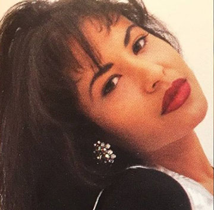

Who is Selena?
Selena Quintanilla is one of the most famous and revered Latin musicians. She became lover by all especially in the Hispanic and Latin community; and eventually gaining fame in America making Tejano music well known. She is known as the “Queen of Tejano Music” and was awarded in 1995 for her albums like Amor Prohibido and Selena Live. She eventually perished at the young age of 23 when she was at the pinacol of her fame. She unfortunately died at the hands of the President of her fan club. They released one last album called Dreaming of You after her passing in 1995.
Born in Lake Jackson, Texas, Selena was born there on April 16, 1971. Selena’s parents were Abraham and Marcella Quintanilla. Her father used to lead a band in his youth playing Tejano music. Because he started a family he left his musical career and instead he used his experience to help manage and produce music for his family band called “Selena Y Los Dinos”.
Selena started learning to perform at the young age of six and she was the youngest of the three children in the family. Her father was teaching her older brother Abraham III how to play the guitar when she began to sing. Not long after he opened a restaurant where they performed there on weekends. Unfortunately, the family restaurant did not survive for long but the band was a small success with local people rooting for them. During her time in Lake Jackson she only knew how to speak English and at 10 years old she began to learn how to speak Spanish by singing it. She learned phonetically at the beginning and eventually became fluent with more practice.
Her whole family moved out and to Corpus Christi, Texas it was her father’s hometown. They became traveling performers and it eventually paid off. At one point they opened for the Mazz which was very popular at the time, she was only eleven at the time and won everyone over. Her schooling wasn’t a main focus and stopped taking classes in eight grades. She later on got her GED in 1989.
All information, pictures, and music is copyrighted. This website is only for educational purposes.